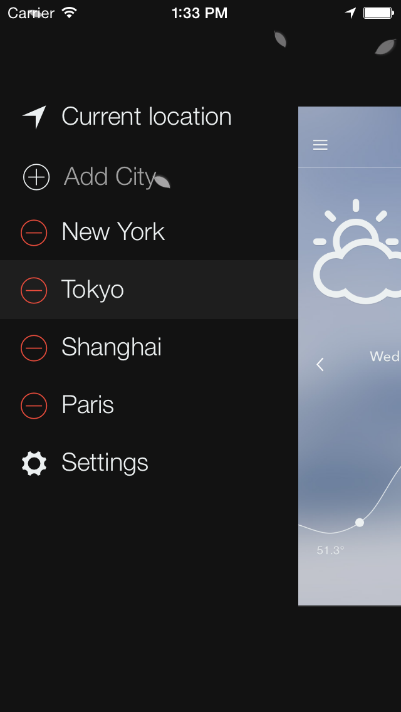
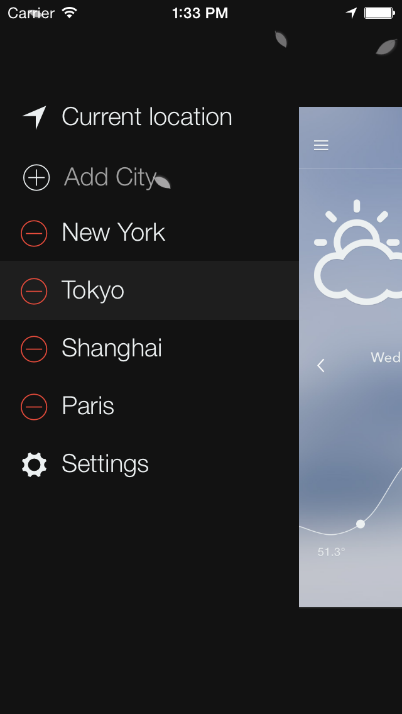

The Weather, simply
Nice Weather was designed with simplicity in mind and aim to provide a clean and simple user experience.
Top 10 Free Apps
#1 "What's hot" in Weather category
★★★★★ Nice and beatutiful
Remarkable UI and UX. Best Weather apps ever! |Abram|, 24 Oct 2013
★★★★☆ Beautiful
If this app continues to work well it will be my all time favorite. Wish I could put it on my lock screen! Grohlier , 24 Oct 2013